from sklearn.cluster import KMeans
import matplotlib.pyplot as plt
import seaborn as sns
from tqdm import tqdm
from katlas.core import *
from katlas.plot import *
import pandas as pd, numpy as npKmeans motifs
Kmeans
Data
human = pd.read_parquet('raw/human_phosphoproteome.parquet')
df_grouped = pd.read_parquet('raw/combine_source_grouped.parquet')all_site = pd.concat([human,df_grouped])all_site.sub_site.isna().sum()np.int64(0)all_site = all_site.drop_duplicates('sub_site')# all_site = all_site[['sub_site','site_seq']].drop_duplicates('sub_site')Elbow method
def determine_clusters_elbow(encoded_data,interval=50):
wcss = []
for i in range(1, 400,interval):
kmeans = KMeans(n_clusters=i, random_state=42)
kmeans.fit(encoded_data)
wcss.append(kmeans.inertia_)
# Plot the Elbow graph
plt.figure(figsize=(5, 3))
plt.plot(range(1, 400,interval), wcss)
plt.title(f'Elbow Method (n={len(encoded_data)})')
plt.xlabel('# Clusters')
plt.ylabel('WCSS')sns.set(rc={"figure.dpi":300, 'savefig.dpi':300})
sns.set_context('notebook')
sns.set_style("ticks")onehot = onehot_encode(all_site['site_seq'])CPU times: total: 3.39 s
Wall time: 3.44 sall_site.shape(131843, 13)# %%time
# determine_clusters_elbow(onehot)Kmeans
If using RAPIDS
# # pip install --extra-index-url=https://pypi.nvidia.com \"cudf-cu12==25.2.*\" \"cuml-cu12==25.2.*\"
# %load_ext cudf.pandas
# import numpy as np, pandas as pd
# from cuml import KMeans
# import matplotlib.pyplot as plt
# import seaborn as sns
# from tqdm import tqdm
# from katlas.core import *
# from katlas.plot import *def kmeans(onehot,n=2,seed=42):
kmeans = KMeans(n_clusters=n, random_state=seed,n_init='auto')
return kmeans.fit_predict(onehot)ncluster=[50,150,300]
seeds=[42,2025,28]pssms=[]
for seed in seeds:
print('seed',seed)
for n in ncluster:
colname = f'cluster{n}_seed{seed}'
print(colname)
onehot = onehot_encode(all_site['site_seq'])
all_site[colname] = kmeans(onehot,n=n,seed=seed)
pssm_df = extract_motifs(all_site,colname,valid_thr=0.5)
pssm_df.index =colname+'_'+pssm_df.index.astype(str)
pssms.append(pssm_df)pssms = pd.concat(pssms,axis=0)
# pssms.to_parquet('raw/kmeans.parquet')# all_site.to_parquet('raw/kmeans_site.parquet',index=False)pssms = pd.read_parquet('raw/kmeans.parquet')all_site=pd.read_parquet('raw/kmeans_site.parquet')all_site.head()| sub_site | site_seq | cluster50_seed42 | cluster150_seed42 | cluster300_seed42 | cluster50_seed2025 | cluster150_seed2025 | cluster300_seed2025 | cluster50_seed28 | cluster150_seed28 | cluster300_seed28 | |
|---|---|---|---|---|---|---|---|---|---|---|---|
| 0 | A0A024R4G9_S20 | _MTVLEAVLEIQAITGSRLLsMVPGPARPPGSCWDPTQCTR | 33 | 97 | 249 | 41 | 53 | 53 | 3 | 45 | 261 |
| 1 | A0A075B6Q4_S24 | QKSENEDDSEWEDVDDEKGDsNDDYDSAGLLsDEDCMSVPG | 37 | 97 | 9 | 42 | 117 | 28 | 2 | 149 | 137 |
| 2 | A0A075B6Q4_S35 | EDVDDEKGDsNDDYDSAGLLsDEDCMSVPGKTHRAIADHLF | 45 | 102 | 2 | 30 | 122 | 122 | 6 | 149 | 149 |
| 3 | A0A075B6Q4_S57 | EDCMSVPGKTHRAIADHLFWsEETKSRFTEYsMTssVMRRN | 30 | 100 | 201 | 30 | 58 | 58 | 18 | 35 | 252 |
| 4 | A0A075B6Q4_S68 | RAIADHLFWsEETKSRFTEYsMTssVMRRNEQLTLHDERFE | 11 | 75 | 68 | 10 | 48 | 164 | 39 | 96 | 226 |
Expand the cluster into a single column
id_vars = ['sub_site', 'site_seq']
value_vars = [col for col in all_site.columns if col.startswith('cluster')]all_site_long = pd.melt(all_site, id_vars=id_vars, value_vars=value_vars, var_name='cluster_info', value_name='cluster')all_site_long['cluster_id']=all_site_long['cluster_info'] + '_' + all_site_long['cluster'].astype(str)all_site_long.head()| sub_site | site_seq | cluster_info | cluster | cluster_id | |
|---|---|---|---|---|---|
| 0 | A0A024R4G9_S20 | _MTVLEAVLEIQAITGSRLLsMVPGPARPPGSCWDPTQCTR | cluster50_seed42 | 33 | cluster50_seed42_33 |
| 1 | A0A075B6Q4_S24 | QKSENEDDSEWEDVDDEKGDsNDDYDSAGLLsDEDCMSVPG | cluster50_seed42 | 37 | cluster50_seed42_37 |
| 2 | A0A075B6Q4_S35 | EDVDDEKGDsNDDYDSAGLLsDEDCMSVPGKTHRAIADHLF | cluster50_seed42 | 45 | cluster50_seed42_45 |
| 3 | A0A075B6Q4_S57 | EDCMSVPGKTHRAIADHLFWsEETKSRFTEYsMTssVMRRN | cluster50_seed42 | 30 | cluster50_seed42_30 |
| 4 | A0A075B6Q4_S68 | RAIADHLFWsEETKSRFTEYsMTssVMRRNEQLTLHDERFE | cluster50_seed42 | 11 | cluster50_seed42_11 |
# all_site_long.to_parquet('raw/kmeans_site_long.parquet',index=False)Get JS distance
Get 1D distance
def compute_distance_matrix(df,func=js_divergence_flat):
n = len(df)
dist = []
for i in tqdm(range(n)):
for j in range(i+1, n):
d = func(df.iloc[i].values, df.iloc[j].values)
dist.append(d)
return np.array(dist)distances = compute_distance_matrix(pssms)100%|██████████| 1460/1460 [01:56<00:00, 12.50it/s] distancesarray([0.02902039, 0.02301795, 0.0316568 , ..., 0.20584111, 0.32253787,
0.28244867])Hierarchical clustering
from scipy.cluster.hierarchy import linkage, fcluster,dendrogramZ = linkage(distances, method='ward')def plot_dendrogram(Z,output='raw/dendrogram.pdf',color_thr=0.03,**kwargs):
length=(len(Z)+1)//8
plt.figure(figsize=(5,length))
dendrogram(Z, orientation='left', leaf_font_size=7, color_threshold=color_thr,**kwargs)
plt.title('Hierarchical Clustering Dendrogram')
plt.ylabel('Distance')
plt.savefig(output, bbox_inches='tight')
plt.close()labels = [i+': '+pssm_to_seq(recover_pssm(r),0.2) for i,r in pssms.iterrows()]labels[:5]['cluster50_seed42_17: ....................t*....................',
'cluster50_seed42_10: ....................t*s[s/P]..................',
'cluster50_seed42_31: ....................y*....................',
'cluster50_seed42_2: ....................y*....................',
'cluster50_seed42_7: ....................s*....................']plot_dendrogram(Z,output='raw/dendrogram_label.pdf',labels=labels)plot_dendrogram(Z) # with only index numberdef plot_motifs(pssm_df,*idxs):
for idx in idxs:
pssm = recover_pssm(pssm_df.loc[idx])
plot_logo(pssm,figsize=(14,1))
plt.show()
plt.close()plot_motifs(pssms, 'cluster300_seed28_217','cluster50_seed42_40')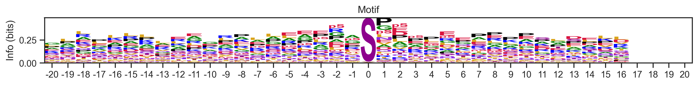
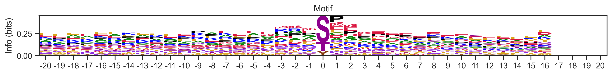
Cut trees
labels = fcluster(Z, t=0.03, criterion='distance')
# pssm_df['cluster'] = labelsZ.shape(1459, 4)Map new cluster
cluster_map = pd.Series(labels,index=pssms.index)pssms.index # note that pssms does not contain all cluster, as it already filter out low quality pssmIndex(['cluster50_seed42_17', 'cluster50_seed42_10', 'cluster50_seed42_31',
'cluster50_seed42_2', 'cluster50_seed42_7', 'cluster50_seed42_29',
'cluster50_seed42_39', 'cluster50_seed42_16', 'cluster50_seed42_33',
'cluster50_seed42_48',
...
'cluster300_seed28_26', 'cluster300_seed28_186', 'cluster300_seed28_5',
'cluster300_seed28_70', 'cluster300_seed28_266', 'cluster300_seed28_30',
'cluster300_seed28_277', 'cluster300_seed28_110',
'cluster300_seed28_221', 'cluster300_seed28_174'],
dtype='object', length=1460)all_site_long['cluster_new'] = all_site_long.cluster_id.map(lambda x: cluster_map.get(x, 0)) #0 is unmapped# all_site_long.to_parquet('raw/kmeans_site_long_new_cluster.parquet',index=False)Get new cluster motifs
def extract_motifs2(df, cluster_col, seq_col='site_seq', count_thr=10, valid_thr=None,plot=False):
"Extract motifs from clusters in a dataframe"
pssms = []
ids = []
value_counts = df[cluster_col].value_counts()
for cluster_id, counts in tqdm(value_counts.items(),total=len(value_counts)):
if count_thr is not None and counts <= count_thr:
continue
# Modify this line
# df_cluster = df[df[cluster_col] == cluster_id]
df_cluster = df[df[cluster_col] == cluster_id].drop_duplicates('sub_site')
n= len(df_cluster)
pssm = get_prob(df_cluster, seq_col)
valid_score = (pssm != 0).sum().sum() / (pssm.shape[0] * pssm.shape[1])
if valid_thr is not None and valid_score <= valid_thr:
continue
pssms.append(flatten_pssm(pssm))
ids.append(cluster_id)
if plot:
plot_logo(pssm, title=f'Cluster {cluster_id} (n={n})', figsize=(14, 1))
plt.show()
plt.close()
pssm_df = pd.DataFrame(pssms, index=ids)
return pssm_dfall_site_long| sub_site | site_seq | cluster_info | cluster | cluster_id | cluster_new | |
|---|---|---|---|---|---|---|
| 0 | A0A024R4G9_S20 | _MTVLEAVLEIQAITGSRLLsMVPGPARPPGSCWDPTQCTR | cluster50_seed42 | 33 | cluster50_seed42_33 | 464 |
| 1 | A0A075B6Q4_S24 | QKSENEDDSEWEDVDDEKGDsNDDYDSAGLLsDEDCMSVPG | cluster50_seed42 | 37 | cluster50_seed42_37 | 448 |
| 2 | A0A075B6Q4_S35 | EDVDDEKGDsNDDYDSAGLLsDEDCMSVPGKTHRAIADHLF | cluster50_seed42 | 45 | cluster50_seed42_45 | 328 |
| 3 | A0A075B6Q4_S57 | EDCMSVPGKTHRAIADHLFWsEETKSRFTEYsMTssVMRRN | cluster50_seed42 | 30 | cluster50_seed42_30 | 536 |
| 4 | A0A075B6Q4_S68 | RAIADHLFWsEETKSRFTEYsMTssVMRRNEQLTLHDERFE | cluster50_seed42 | 11 | cluster50_seed42_11 | 368 |
| ... | ... | ... | ... | ... | ... | ... |
| 1186582 | Q9Y6I9_T257 | EtsAAtLsPGASsRGWDDGDtRsEHSYsESGAsGssFEELD | cluster300_seed28 | 170 | cluster300_seed28_170 | 657 |
| 1186583 | Q9Y6M4_S372 | HRDKMQQSKNQSADHRAAWDsQQANPHHLRAHLAADRHGGS | cluster300_seed28 | 198 | cluster300_seed28_198 | 430 |
| 1186584 | Q9Y6M4_T332 | FDRKGYMFDyEyDWIGKQLPtPVGAVQQDPALssNREAHQH | cluster300_seed28 | 146 | cluster300_seed28_146 | 679 |
| 1186585 | Q9Y6R4_T1324 | FEEKRYREMRRKNIIGQVCDtPKSyDNVMHVGLRKVTFKWQ | cluster300_seed28 | 146 | cluster300_seed28_146 | 679 |
| 1186586 | Q9Y6R4_Y1328 | RYREMRRKNIIGQVCDtPKSyDNVMHVGLRKVTFKWQRGNK | cluster300_seed28 | 86 | cluster300_seed28_86 | 676 |
1186587 rows × 6 columns
all_site_long.cluster_new.sort_values().unique()[-10:]array([737, 738, 739, 740, 741, 742, 743, 744, 745, 746])746 motifs
_ = extract_motifs2(all_site_long,'cluster_new','site_seq',count_thr=10,valid_thr=0.3,plot=True) 0%| | 0/747 [00:00<?, ?it/s]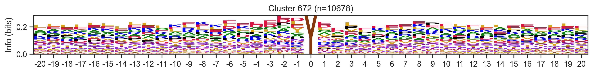
0%| | 1/747 [00:05<1:09:26, 5.59s/it]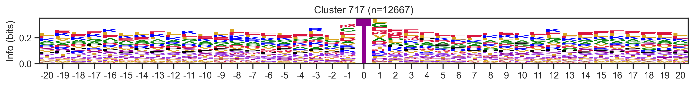
0%| | 2/747 [00:11<1:11:14, 5.74s/it]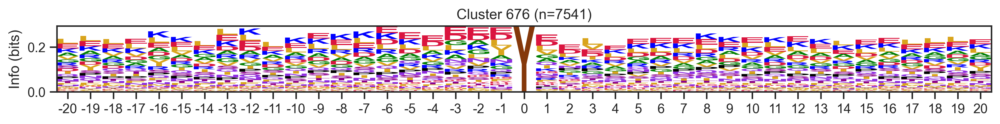
0%| | 3/747 [00:16<1:10:05, 5.65s/it]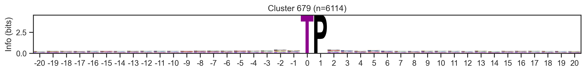
1%| | 4/747 [00:22<1:08:30, 5.53s/it]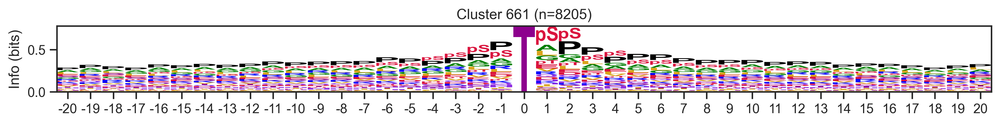
1%| | 5/747 [00:30<1:16:36, 6.19s/it]--------------------------------------------------------------------------- KeyboardInterrupt Traceback (most recent call last) Cell In[176], line 1 ----> 1 _ = extract_motifs2(all_site_long,'cluster_new','site_seq',count_thr=10,valid_thr=0.3,plot=True) Cell In[144], line 24, in extract_motifs2(df, cluster_col, seq_col, count_thr, valid_thr, plot) 21 ids.append(cluster_id) 23 if plot: ---> 24 plot_logo(pssm, title=f'Cluster {cluster_id} (n={n})', figsize=(14, 1)) 25 plt.show() 26 plt.close() File f:\git\katlas\katlas\plot.py:161, in plot_logo(prob_df, title, scale_zero, ax, figsize) 159 if ax is None: 160 fig, ax = plt.subplots(figsize=figsize) --> 161 logo = logomaker.Logo(logo_df.T, color_scheme='kinase_protein', flip_below=False, ax=ax) 162 logo.ax.set_ylabel("Info (bits)") 163 logo.style_xticks(fmt='%d') File f:\git\katlas\.venv\lib\site-packages\logomaker\src\error_handling.py:106, in handle_errors.<locals>.wrapped_func(*args, **kwargs) 102 mistake = None 104 try: 105 # Execute function --> 106 result = func(*args, **kwargs) 108 # If running functional test and expect to fail 109 if should_fail is True: File f:\git\katlas\.venv\lib\site-packages\logomaker\src\Logo.py:186, in Logo.__init__(self, df, color_scheme, font_name, stack_order, center_values, baseline_width, flip_below, shade_below, fade_below, fade_probabilities, vpad, vsep, alpha, show_spines, ax, zorder, figsize, **kwargs) 183 self.fig = ax.figure 185 # compute characters --> 186 self._compute_glyphs() 188 # style glyphs below x-axis 189 self.style_glyphs_below(shade=self.shade_below, 190 fade=self.fade_below, 191 flip=self.flip_below) File f:\git\katlas\.venv\lib\site-packages\logomaker\src\Logo.py:1058, in Logo._compute_glyphs(self) 1055 flip = (v < 0 and self.flip_below) 1057 # Create glyph if height is finite -> 1058 glyph = Glyph(p, c, 1059 ax=self.ax, 1060 floor=floor, 1061 ceiling=ceiling, 1062 color=this_color, 1063 flip=flip, 1064 zorder=self.zorder, 1065 font_name=self.font_name, 1066 alpha=self.alpha, 1067 vpad=self.vpad, 1068 **self.glyph_kwargs) 1070 # Add glyph to glyph_df 1071 glyph_df.loc[p, c] = glyph File f:\git\katlas\.venv\lib\site-packages\logomaker\src\error_handling.py:106, in handle_errors.<locals>.wrapped_func(*args, **kwargs) 102 mistake = None 104 try: 105 # Execute function --> 106 result = func(*args, **kwargs) 108 # If running functional test and expect to fail 109 if should_fail is True: File f:\git\katlas\.venv\lib\site-packages\logomaker\src\Glyph.py:180, in Glyph.__init__(self, p, c, floor, ceiling, ax, width, vpad, font_name, font_weight, color, edgecolor, edgewidth, dont_stretch_more_than, flip, mirror, zorder, alpha, figsize) 177 self.ax = ax 179 # Make patch --> 180 self._make_patch() File f:\git\katlas\.venv\lib\site-packages\logomaker\src\Glyph.py:257, in Glyph._make_patch(self) 252 font_properties = fm.FontProperties(family=self.font_name, 253 weight=self.font_weight) 255 # Create a path for Glyph that does not yet have the correct 256 # position or scaling --> 257 tmp_path = TextPath((0, 0), self.c, size=1, 258 prop=font_properties) 260 # Create create a corresponding path for a glyph representing 261 # the max stretched character 262 msc_path = TextPath((0, 0), self.dont_stretch_more_than, size=1, 263 prop=font_properties) File f:\git\katlas\.venv\lib\site-packages\matplotlib\textpath.py:355, in TextPath.__init__(self, xy, s, size, prop, _interpolation_steps, usetex) 352 self._cached_vertices = None 353 s, ismath = Text(usetex=usetex)._preprocess_math(s) 354 super().__init__( --> 355 *text_to_path.get_text_path(prop, s, ismath=ismath), 356 _interpolation_steps=_interpolation_steps, 357 readonly=True) 358 self._should_simplify = False File f:\git\katlas\.venv\lib\site-packages\matplotlib\textpath.py:112, in TextToPath.get_text_path(self, prop, s, ismath) 110 elif not ismath: 111 font = self._get_font(prop) --> 112 glyph_info, glyph_map, rects = self.get_glyphs_with_font(font, s) 113 else: 114 glyph_info, glyph_map, rects = self.get_glyphs_mathtext(prop, s) File f:\git\katlas\.venv\lib\site-packages\matplotlib\textpath.py:148, in TextToPath.get_glyphs_with_font(self, font, s, glyph_map, return_new_glyphs_only) 146 xpositions = [] 147 glyph_ids = [] --> 148 for item in _text_helpers.layout(s, font): 149 char_id = self._get_char_id(item.ft_object, ord(item.char)) 150 glyph_ids.append(char_id) File f:\git\katlas\.venv\lib\site-packages\matplotlib\_text_helpers.py:79, in layout(string, font, kern_mode) 74 kern = ( 75 base_font.get_kerning(prev_glyph_idx, glyph_idx, kern_mode) / 64 76 if prev_glyph_idx is not None else 0. 77 ) 78 x += kern ---> 79 glyph = font.load_glyph(glyph_idx, flags=LOAD_NO_HINTING) 80 yield LayoutItem(font, char, glyph_idx, x, kern) 81 x += glyph.linearHoriAdvance / 65536 KeyboardInterrupt:
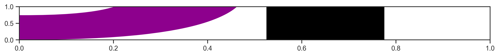
pssms2 = extract_motifs2(all_site_long,'cluster_new','site_seq',count_thr=10,valid_thr=0.3) 0%| | 0/747 [00:00<?, ?it/s]100%|██████████| 747/747 [00:27<00:00, 26.95it/s]pssms3 = pssms2.copy()pssms2 = pssms2.drop(index=0) # as 0 represents unmappeddistances = compute_distance_matrix(pssms2)
Z = linkage(distances, method='ward')100%|██████████| 746/746 [00:29<00:00, 25.16it/s] labels=[str(i)+': '+pssm_to_seq(recover_pssm(r),0.2) for i,r in pssms2.iterrows()]plot_dendrogram(Z,output='raw/dendrogram_label2.pdf',labels=labels,color_thr=0.07)Special sites - specific cluster
n = all_site_long[all_site_long.cluster_new==725].sub_site.unique().shape[0]
print(n)
# all_site_long[all_site_long.cluster_new==725].sub_site.str.split('_').str[0].drop_duplicates().to_csv('any.csv')174Mostly Zinc finger protein
plot_motifs(pssms2,725)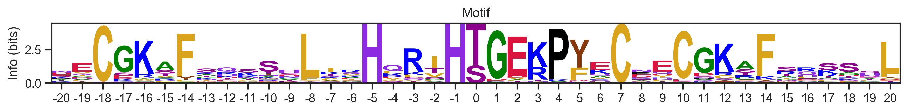
Special sites - most common cluster
all_site_pivot = all_site_long.pivot_table(
index='sub_site',
columns='cluster_new',
aggfunc='size',
fill_value=0
).map(lambda x: 1 if x > 0 else 0)all_site_pivot = all_site_pivot.drop(columns=0)# number of clusters that sites belong to
all_site_pivot.sum(1).sort_values().value_counts()6 23049
5 22529
4 20836
7 19808
3 17321
8 11898
2 10719
9 3277
1 2406
Name: count, dtype: int64all_site_pivot.sum().sort_values(ascending=False)cluster_new
717 12667
631 11035
672 10678
661 8205
70 7771
...
516 119
12 115
171 110
387 106
20 66
Length: 746, dtype: int64idxs = all_site_pivot.sum().sort_values(ascending=False).index[:20]plot_motifs(pssms2, *idxs)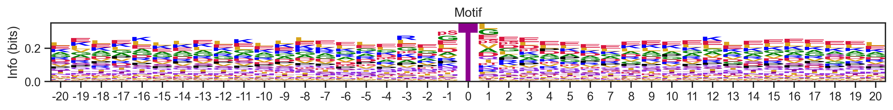
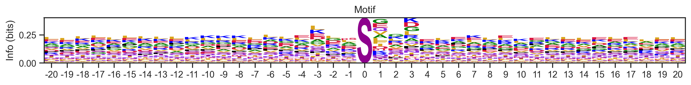
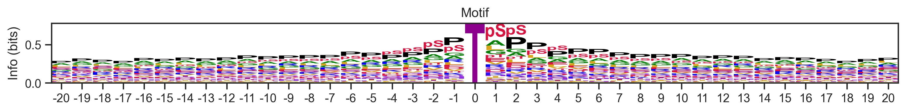
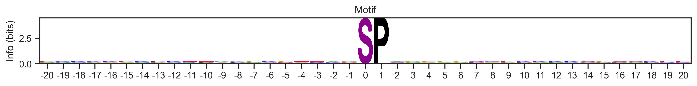
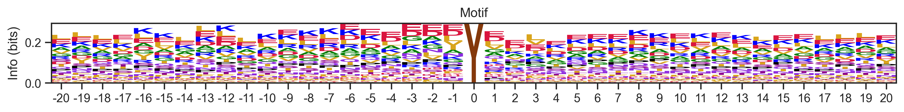
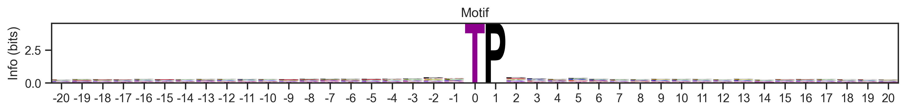
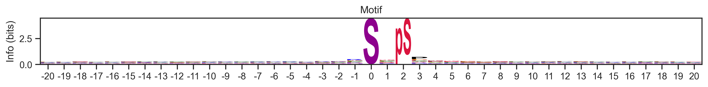
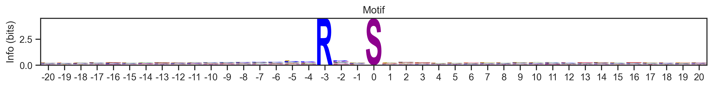
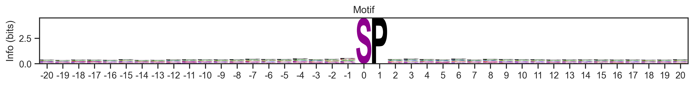
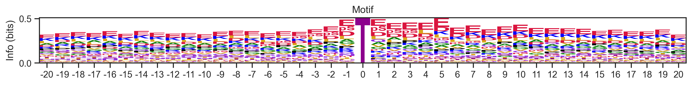
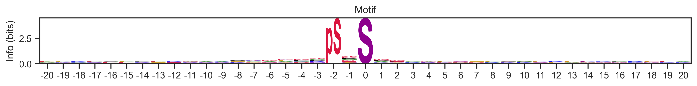
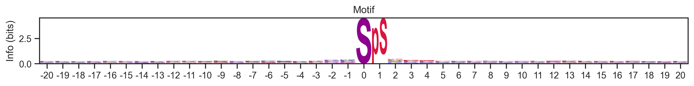
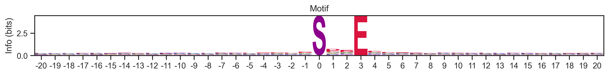
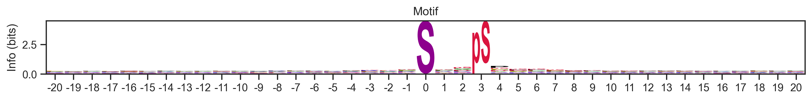
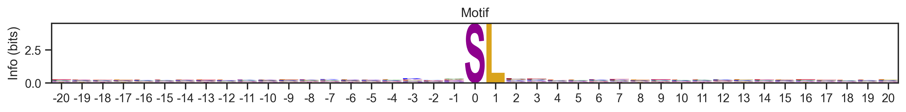
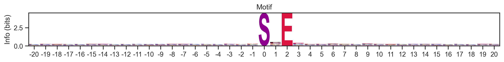
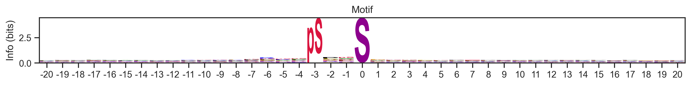
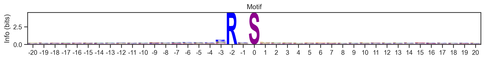
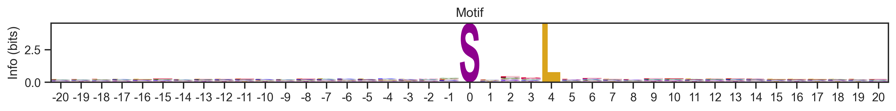
all_site_pivot| cluster_new | 1 | 2 | 3 | 4 | 5 | 6 | 7 | 8 | 9 | 10 | ... | 737 | 738 | 739 | 740 | 741 | 742 | 743 | 744 | 745 | 746 |
|---|---|---|---|---|---|---|---|---|---|---|---|---|---|---|---|---|---|---|---|---|---|
| sub_site | |||||||||||||||||||||
| A0A024R4G9_S20 | 0 | 0 | 0 | 0 | 0 | 0 | 0 | 0 | 0 | 0 | ... | 0 | 0 | 0 | 0 | 0 | 0 | 0 | 0 | 0 | 0 |
| A0A075B6Q4_S24 | 0 | 0 | 0 | 0 | 0 | 0 | 0 | 0 | 0 | 0 | ... | 0 | 0 | 0 | 0 | 0 | 0 | 0 | 0 | 0 | 0 |
| A0A075B6Q4_S35 | 0 | 0 | 0 | 0 | 0 | 0 | 0 | 0 | 0 | 0 | ... | 0 | 0 | 0 | 0 | 0 | 0 | 0 | 0 | 0 | 0 |
| A0A075B6Q4_S57 | 0 | 0 | 0 | 0 | 0 | 0 | 0 | 0 | 0 | 0 | ... | 0 | 0 | 0 | 0 | 0 | 0 | 0 | 0 | 0 | 0 |
| A0A075B6Q4_S68 | 0 | 0 | 0 | 0 | 0 | 0 | 0 | 0 | 0 | 0 | ... | 0 | 0 | 0 | 0 | 0 | 0 | 0 | 0 | 0 | 0 |
| ... | ... | ... | ... | ... | ... | ... | ... | ... | ... | ... | ... | ... | ... | ... | ... | ... | ... | ... | ... | ... | ... |
| V9GYY5_S132 | 0 | 0 | 0 | 0 | 0 | 0 | 0 | 0 | 0 | 0 | ... | 0 | 0 | 0 | 0 | 0 | 0 | 0 | 0 | 0 | 0 |
| V9GYY5_S133 | 0 | 0 | 0 | 0 | 0 | 0 | 0 | 0 | 0 | 0 | ... | 0 | 0 | 0 | 0 | 0 | 0 | 0 | 0 | 0 | 0 |
| V9GYY5_T117 | 0 | 0 | 0 | 0 | 0 | 0 | 0 | 0 | 0 | 0 | ... | 0 | 0 | 0 | 0 | 0 | 0 | 0 | 0 | 0 | 0 |
| V9GYY5_T134 | 0 | 0 | 0 | 0 | 0 | 0 | 0 | 0 | 0 | 0 | ... | 0 | 0 | 0 | 0 | 0 | 0 | 0 | 0 | 0 | 0 |
| V9GYY5_T138 | 0 | 0 | 0 | 0 | 0 | 0 | 0 | 0 | 0 | 0 | ... | 0 | 0 | 0 | 0 | 0 | 0 | 0 | 0 | 0 | 0 |
131843 rows × 746 columns
Umap
import pandas as pd
import umap
import matplotlib.pyplot as plt
import seaborn as snsannot = pd.DataFrame(all_site_pivot.index)annot = annot.merge(all_site[['sub_site','site','site_seq','substrate_genes']])sty = pd.get_dummies(annot['site'].str[0]).astype(int)sty = sty.set_index(all_site_pivot.index)all_site_pivot_sty = pd.concat([all_site_pivot,sty],axis=1)all_site_pivot_sty.head()| 1 | 2 | 3 | 4 | 5 | 6 | 7 | 8 | 9 | 10 | ... | 740 | 741 | 742 | 743 | 744 | 745 | 746 | S | T | Y | |
|---|---|---|---|---|---|---|---|---|---|---|---|---|---|---|---|---|---|---|---|---|---|
| sub_site | |||||||||||||||||||||
| A0A024R4G9_S20 | 0 | 0 | 0 | 0 | 0 | 0 | 0 | 0 | 0 | 0 | ... | 0 | 0 | 0 | 0 | 0 | 0 | 0 | 1 | 0 | 0 |
| A0A075B6Q4_S24 | 0 | 0 | 0 | 0 | 0 | 0 | 0 | 0 | 0 | 0 | ... | 0 | 0 | 0 | 0 | 0 | 0 | 0 | 1 | 0 | 0 |
| A0A075B6Q4_S35 | 0 | 0 | 0 | 0 | 0 | 0 | 0 | 0 | 0 | 0 | ... | 0 | 0 | 0 | 0 | 0 | 0 | 0 | 1 | 0 | 0 |
| A0A075B6Q4_S57 | 0 | 0 | 0 | 0 | 0 | 0 | 0 | 0 | 0 | 0 | ... | 0 | 0 | 0 | 0 | 0 | 0 | 0 | 1 | 0 | 0 |
| A0A075B6Q4_S68 | 0 | 0 | 0 | 0 | 0 | 0 | 0 | 0 | 0 | 0 | ... | 0 | 0 | 0 | 0 | 0 | 0 | 0 | 1 | 0 | 0 |
5 rows × 749 columns
reducer = umap.UMAP(
n_neighbors=15,
n_components=2,
metric='jaccard',
# min_dist=0.1,
# random_state=42,
# verbose=True,
)
embedding = reducer.fit_transform(all_site_pivot_sty)f:\git\katlas\.venv\lib\site-packages\sklearn\utils\deprecation.py:151: FutureWarning: 'force_all_finite' was renamed to 'ensure_all_finite' in 1.6 and will be removed in 1.8.
warnings.warn(
f:\git\katlas\.venv\lib\site-packages\logomaker/..\umap\umap_.py:1887: UserWarning: gradient function is not yet implemented for jaccard distance metric; inverse_transform will be unavailable
warn(embedding_df = pd.DataFrame(embedding, columns=['UMAP1', 'UMAP2'])sns.scatterplot(data=embedding_df, x='UMAP1', y='UMAP2', alpha=0.5,
s=0.1,
edgecolor='none',hue=annot['site'].str[0])<Axes: xlabel='UMAP1', ylabel='UMAP2'>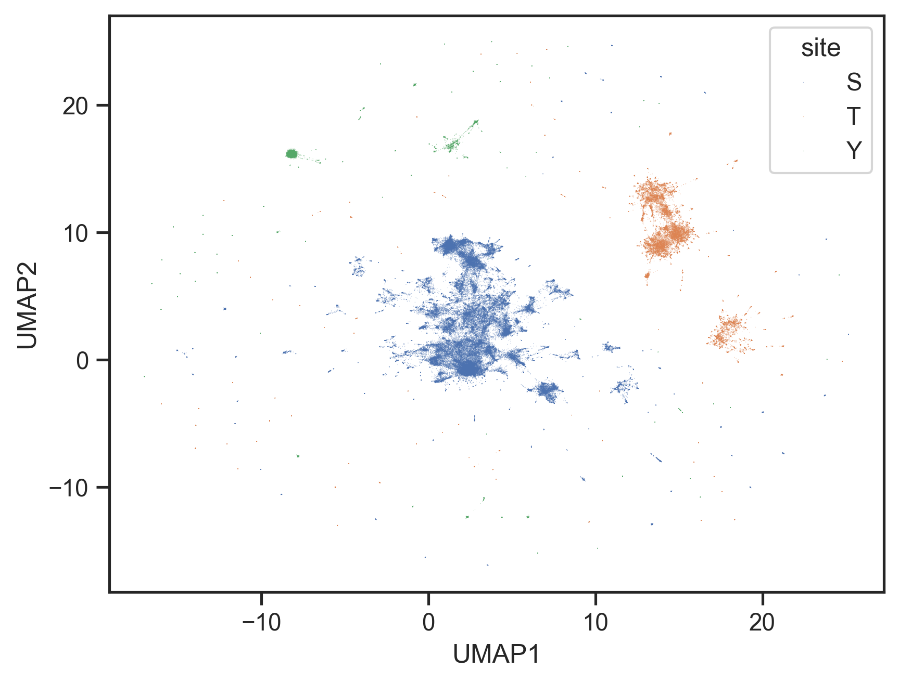
annot['site_seq'].str.len()//20 20
1 20
2 20
3 20
4 20
..
131838 20
131839 20
131840 20
131841 20
131842 20
Name: site_seq, Length: 131843, dtype: int64sns.scatterplot(data=embedding_df, x='UMAP1', y='UMAP2', alpha=0.5,
s=0.1,
edgecolor='none',hue=annot['site_seq'].str[21])<Axes: xlabel='UMAP1', ylabel='UMAP2'>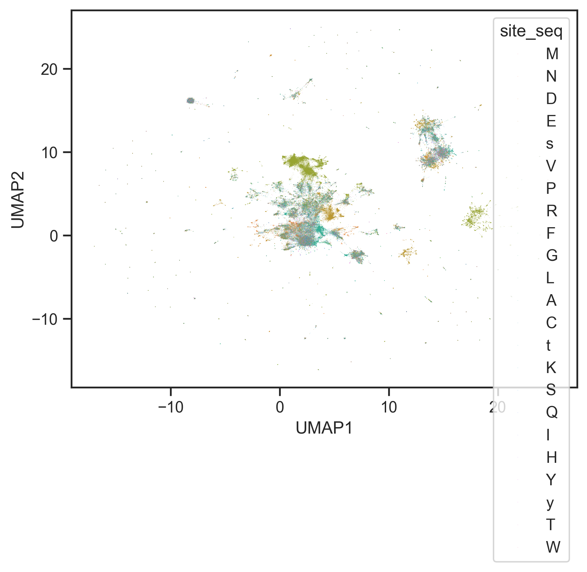
Entropy
from katlas.core import *pspa = Data.get_pspa_all_norm()pspa.index.duplicated(keep=False).sum()np.int64(0)pspa = pspa.dropna(axis=1)entropy??Signature: entropy(pssm_df, return_min=False, exclude_zero=False, contain_sty=True)
Source:
def entropy(pssm_df,# a dataframe of pssm wtih index as aa and column as position
return_min=False, # return min entropy as a single value or return all entropy as a series
exclude_zero=False, # exclude the column of 0 (center position) in the entropy calculation
contain_sty=True, # keep only s,t,y values (last three) in center 0 position
):
"Calculate entropy per position (max) of a PSSM surrounding 0"
pssm_df = pssm_df.copy()
pssm_df.columns= pssm_df.columns.astype(int)
if 0 in pssm_df.columns:
if exclude_zero:
pssm_df = pssm_df.drop(columns=[0])
if contain_sty:
pssm_df.loc[pssm_df.index[:-3], 0] = 0
pssm_df = pssm_df/pssm_df.sum()
per_position = -np.sum(pssm_df * np.log2(pssm_df + 1e-9), axis=0)
return per_position.min() if return_min else per_position
File: f:\git\katlas\katlas\core.py
Type: functionentropy_flat??Signature:
entropy_flat(
flat_pssm: pandas.core.series.Series,
return_min=False,
exclude_zero=False,
contain_sty=True,
)
Source:
def entropy_flat(flat_pssm:pd.Series,return_min=False,exclude_zero=False,contain_sty=True):
"Calculate entropy per position of a flat PSSM surrounding 0"
pssm_df = recover_pssm(flat_pssm)
return entropy(pssm_df,return_min=return_min,exclude_zero=exclude_zero,contain_sty=contain_sty)
File: f:\git\katlas\katlas\core.py
Type: functionentropies = []
ICs = []
for i,r in pspa.iterrows():
entropies.append(entropy_flat(r,return_min=False).to_dict())
ICs.append(get_IC_flat(r).to_dict())entropy_df = pd.DataFrame(entropies,index=pspa.index)
IC_df = pd.DataFrame(ICs,index=pspa.index)entropy_df| -5 | -4 | -3 | -2 | -1 | 0 | 1 | 2 | 3 | 4 | |
|---|---|---|---|---|---|---|---|---|---|---|
| kinase | ||||||||||
| AAK1 | 4.238872 | 4.477492 | 4.419067 | 4.334337 | 4.285531 | 4.430518e-01 | 2.367128 | 4.484580 | 4.459749 | 4.448665 |
| ACVR2A | 4.492276 | 4.483099 | 4.422408 | 3.851257 | 4.450203 | 9.999489e-01 | 4.101970 | 4.509378 | 4.502156 | 4.509964 |
| ACVR2B | 4.480671 | 4.478871 | 4.409857 | 3.939154 | 4.426689 | 9.996887e-01 | 4.074009 | 4.491815 | 4.508044 | 4.505800 |
| AKT1 | 4.427160 | 4.402988 | 3.143867 | 3.590452 | 4.374148 | 9.659053e-01 | 4.334536 | 4.429082 | 4.442455 | 4.412808 |
| AKT2 | 4.427318 | 4.415247 | 2.970578 | 3.821267 | 4.416441 | 9.566125e-01 | 4.467609 | 4.463490 | 4.452789 | 4.435681 |
| ... | ... | ... | ... | ... | ... | ... | ... | ... | ... | ... |
| KDR | 4.491261 | 4.472633 | 4.457427 | 4.448105 | 4.381677 | -1.442695e-09 | 4.390681 | 4.443358 | 4.152800 | 4.462793 |
| FLT4 | 4.511274 | 4.501896 | 4.500559 | 4.504176 | 4.297943 | -1.442695e-09 | 4.290937 | 4.344806 | 4.154417 | 4.498858 |
| WEE1_TYR | 4.507984 | 4.495537 | 4.489914 | 4.470009 | 4.089527 | -1.442695e-09 | 4.284853 | 4.403815 | 4.301392 | 4.426540 |
| YES1 | 4.497127 | 4.491665 | 4.442265 | 4.465032 | 4.274232 | -1.442695e-09 | 4.350331 | 4.485518 | 4.275385 | 4.492019 |
| ZAP70 | 4.355980 | 4.260120 | 4.111361 | 4.128756 | 3.473012 | -1.442695e-09 | 3.634941 | 4.358286 | 4.286572 | 4.474739 |
396 rows × 10 columns
# columns surrounding 0
cols = pspa.columns[~pspa.columns.str.startswith('0')]pspa[cols].max(1).sort_values()kinase
VRK2 0.0941
ROS1 0.0983
TYK2 0.0995
LIMK1_TYR 0.1027
RET 0.1027
...
YANK2 3.7589
GSK3B 3.9147
YANK3 4.2045
CK1A 5.8890
CK1G3 8.4920
Length: 396, dtype: float64def plot_dots(df,ylabel='bits',figsize=(5,3)):
df.columns = df.columns.astype(str)
plt.figure(figsize=figsize)
for i, col in enumerate(df.columns):
x_jitter = np.random.normal(loc=i, scale=0.1, size=len(df))
plt.scatter(x_jitter, df[col], alpha=0.7, s=5,edgecolors='none')
plt.xticks(range(len(df.columns)), df.columns)
plt.xlabel("Position")
plt.ylabel(ylabel)def plot_violin(df, ylabel='bits', figsize=(5, 3)):
df_melted = df.melt(var_name='Position', value_name='Value')
plt.figure(figsize=figsize)
sns.violinplot(x='Position', y='Value', data=df_melted, inner=None, density_norm='width')
sns.stripplot(x='Position', y='Value', data=df_melted, color='k', size=2, jitter=True, alpha=0.5)
plt.xlabel('Position')
plt.ylabel(ylabel)
plt.tight_layout()plot_violin(entropy_df,ylabel='Entropy (bits)')
plt.title('Entropy per Position');
plot_violin(IC_df,ylabel='Information content (bits)')
plt.title('Information Content per Position');plot_dots(IC_df,ylabel='Information Content (bits)')
plt.title('Information Content per Position');
plot_dots(entropy_df,ylabel='Entropy (bits)')
plt.title('Entropy per Position');entropy_df.columnsIndex(['-5', '-4', '-3', '-2', '-1', '0', '1', '2', '3', '4'], dtype='object')entropy_df2 = entropy_df.drop(columns=['0']).copy()entropy_df2.min(1).sort_values().head(20)kinase
CK1G3 1.674890
CK1A 1.825040
YANK3 1.943948
YANK2 2.017911
P38G 2.053687
P38D 2.060065
GSK3B 2.067587
GSK3A 2.108316
CDK17 2.123790
CK1G2 2.148218
CDK3 2.198466
SBK 2.216507
CK1A2 2.221651
ERK7 2.223145
CK1D 2.236495
CDK16 2.255882
AAK1 2.367128
FAM20C 2.400912
CDK18 2.435806
CDK4 2.452885
dtype: float64